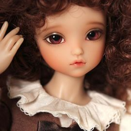
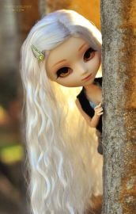
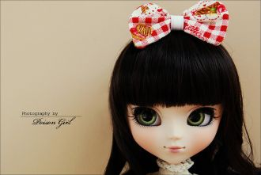
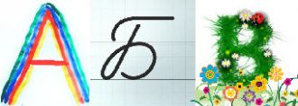
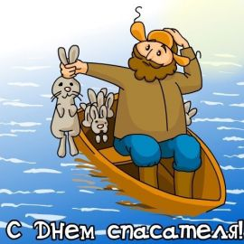

Про небо в январе знаешь только ты,Про мои сны знаешь столько,Мне некуда бежать,Не могу сказать,Как устало солнце биться
Ла-ла ла-ла ла-ла-ла – 4 раза
В этот серый, скучный вечерЯ тебя случайно встретил,Я позвал тебя с собоюИ назвал тебя судьбою.У тебя глаза, как море,
كلمات اغنية يارا ما بعرف
مابعرف كيف بنظرة بتعمل هيكبتاخدنى ليك وبموت عليك
Одиноко бродит в этот часНаше тайна самых первых фраз,И стая птиц, как сон, уносит осень вдаль,Не могла она с ним улететь,
Рiдна мати моя, ти ночей не доспала.I водила мене у поля край села,I в дорогу далеку ти мене на зорi проводжалаI рушник вишиваний на щастя дала.
Дуне т1а мел йоаккха хаХьона йоаккха аз.Аз мел доаха саХьона доах аз.Д1а мел оала дош хьона оал,Са нана, хьо йоацаш йоахалургьяц.

Моё платье - твоих рук родные объятья. Мои чувства, давно живут на распятье. Второпях, на губах согреваются страстью.
Улетай на крыльях ветраТы в край родной, родная песня наша,Туда, где мы тебя свободно пели,Где было так привольно нам с тобою.
Как хорошо что есть родимый дом что в нем еще не прохудилась крыша и словно в детстве печка хлебом дышит и в доме пахнет теплым молоком.

В вихре радостной лезгинкиГордый танец кружит нас!Море счастья и улыбки -Это северный Кавказ.Эти цепи гор могучих!Эти реки и поля!
Опять, опять вошла краса РоссииВ малюсенькую улочку мою.Я в дали вглядываюсь... Что есть силы
Подари себе все, что хочешь.Выбирай не деньгами, душой.День сегодня удачный очень,Не дари его, стань Большой!

Мы храним в наших сердцахДобрые мотивыО великих мудрецах - Мефодии и Кирилле.
13.04.2015г.
11.32ч.
Три войны прошел мой дедушка,
Но остался жив - оглох слегка на одно ухо,
Стоишь и ждешь своей минуты?

Всяко разное в жизни бывает
Не всегда ярко солнышко светит
Тучи в небе порой набегают
В дом ударить молния метит
Я бога лишь благодарю.
Я так люблю свою семью,
И каждый раз на сон грядущий
Я бога лишь благодарю,
Ты спишь, а на улице ветерТы спишь, а на улице дождьЗа наши дела только мы лишь в ответе,Надеюсь, ты это поймешь